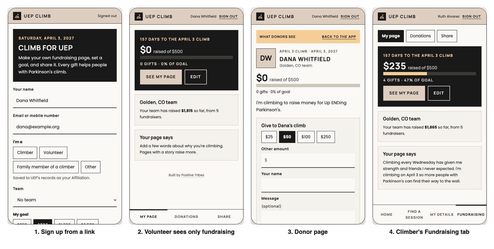
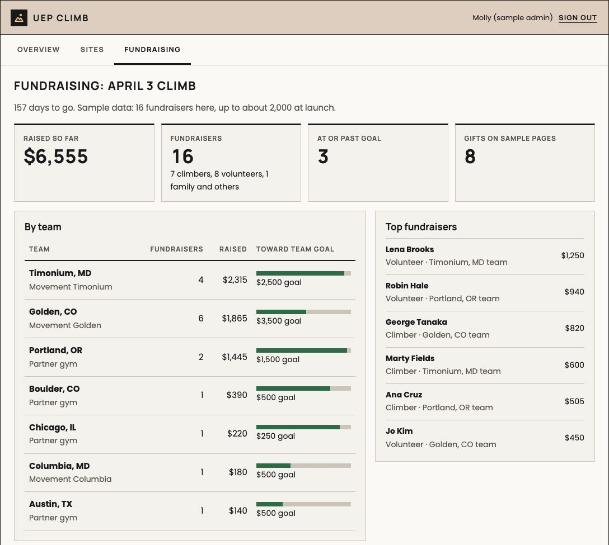
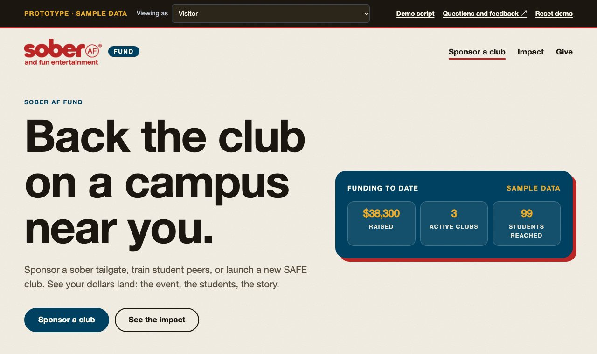
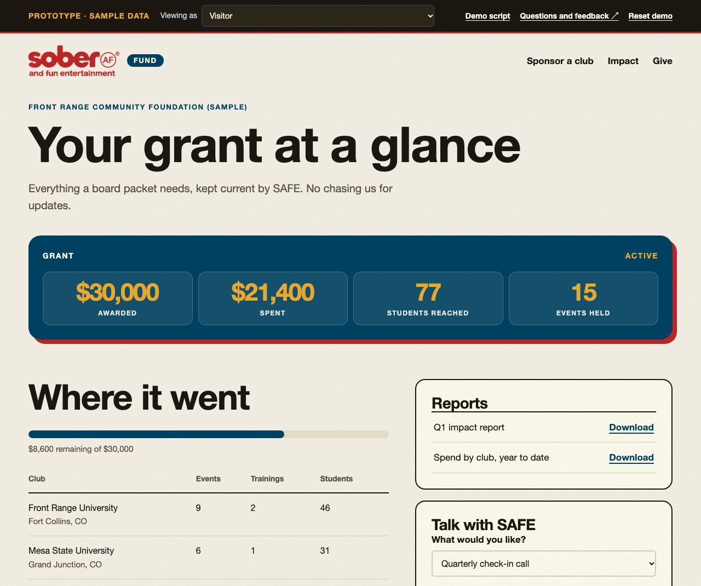
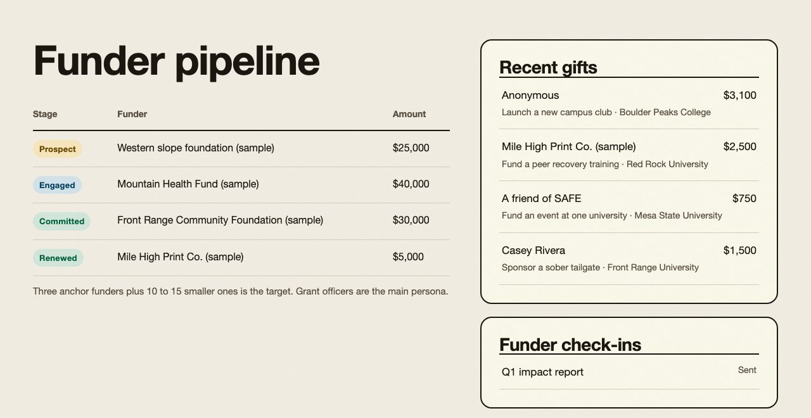

Small nonprofits, different fundraising problems, one approach: make giving easy, show every donor and funder where their money went, and let gifts record themselves so staff stop re-typing them.
UEP runs climbing sessions for people with Parkinson's at gyms across the country, mostly with volunteers. For its April 3 climb it wants to raise several times its biggest campaign so far, with no fundraising staff to chase pages or enter gifts.


SAFE, a Colorado recovery community organization, runs sober clubs on college campuses. Foundations want proof of impact before they renew, and small donors want something concrete to back. Tracking it by hand across spreadsheets doesn't scale.



Both builds started from the same question: what would make the next gift easier to ask for, and easier to give?
Try the live examples (sample data only): UEP Climb and SAFE Fund.
Eric Roberts, Founder, Positive Tribes · eric@positivetribes.org · positivetribes.org